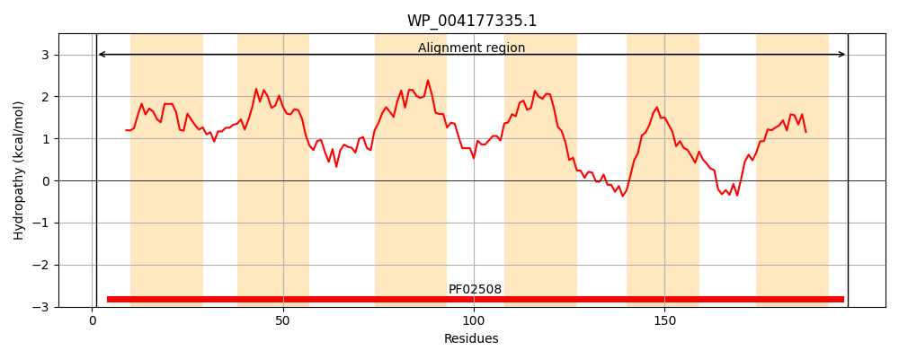
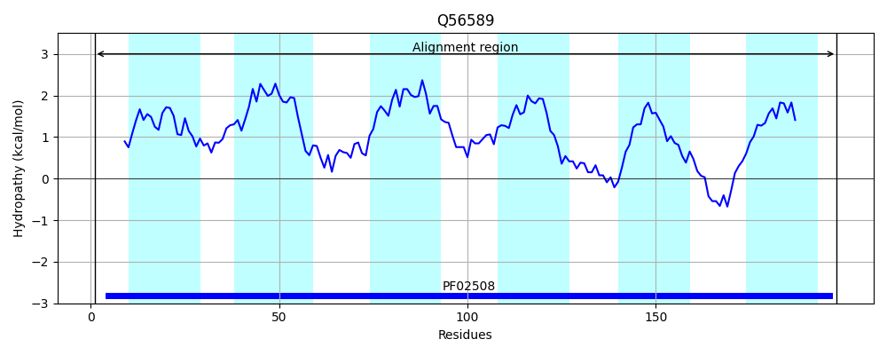
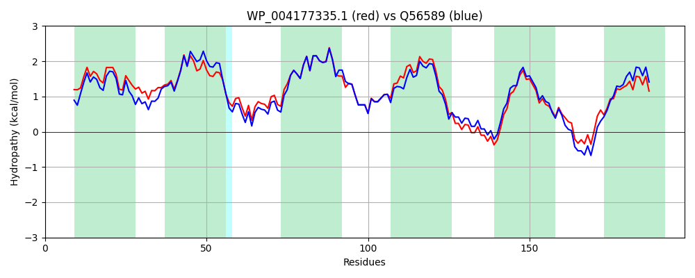

Hit Accession: Q56589
Hit TCID: 3.D.5.1.1
Hit Description: gnl|BL_ORD_ID|14142 gnl|TC-DB|Q56589|3.D.5.1.1 Na(+)-translocating NADH-quinone reductase subunit E (EC 1.6.5.-) (Na(+)-translocating NQR subunit E) (Na(+)-NQR subunit E) (NQR complex subunit E) (NQR-1 subunit E) - Vibrio alginolyticus.
Mach Len: 198
e:0.000000
Query TMS Count : 6
Hit TMS Count: 6
TMS-Overlap Score: 6.000000
Predicted Substrates:CHEBI:9175;sodium(1+)
BLAST Alignment:
Score: 886 , Bit scores: 345 bits, E-value: 3.2e-123, Alignment length: 198, Percentage identity: 86
Query: 1 MAHYISLFVRAVFVENMALAFFLGMCTFLAVSKKVSTAFGLGVAVTVVLGLAVPINNLVYNLVLRDGALVEGVDLSFLNFITFIGVIAALVQILEMILDKYFPALYNALGIFLPLIAVNCAIFGGVSFMVQRDYNFPESIVYGFGSGIGWMLAIVAMAGIREKMKYANVPAGLRGLGITFITTGLMALGFMSFSGVQL 198
M HYISL V+++F+ENMAL+FFLGMCTFLAVSKKV T+FGLGVAV VVL +AVP+NNLVYNLVLR+ ALVEGVDLSFLNFITFIGVIAALVQILEM+LD++FP LYNALGIFLPLI VNCAIFGGVSFMVQRDYNF ESIVYGFGSG+GWMLAIVA+AGIREKMKY++VP GLRGLGITFIT GLMALGFMSFSGVQL
Sbjct: 1 MEHYISLLVKSIFIENMALSFFLGMCTFLAVSKKVKTSFGLGVAVVVVLTIAVPVNNLVYNLVLRENALVEGVDLSFLNFITFIGVIAALVQILEMVLDRFFPPLYNALGIFLPLITVNCAIFGGVSFMVQRDYNFAESIVYGFGSGVGWMLAIVALAGIREKMKYSDVPPGLRGLGITFITVGLMALGFMSFSGVQL 198 | Protein Hydropathy Plots: |
|---|
|  |  |
Pairwise Alignment-Hydropathy Plot:
|
|---|
|  |